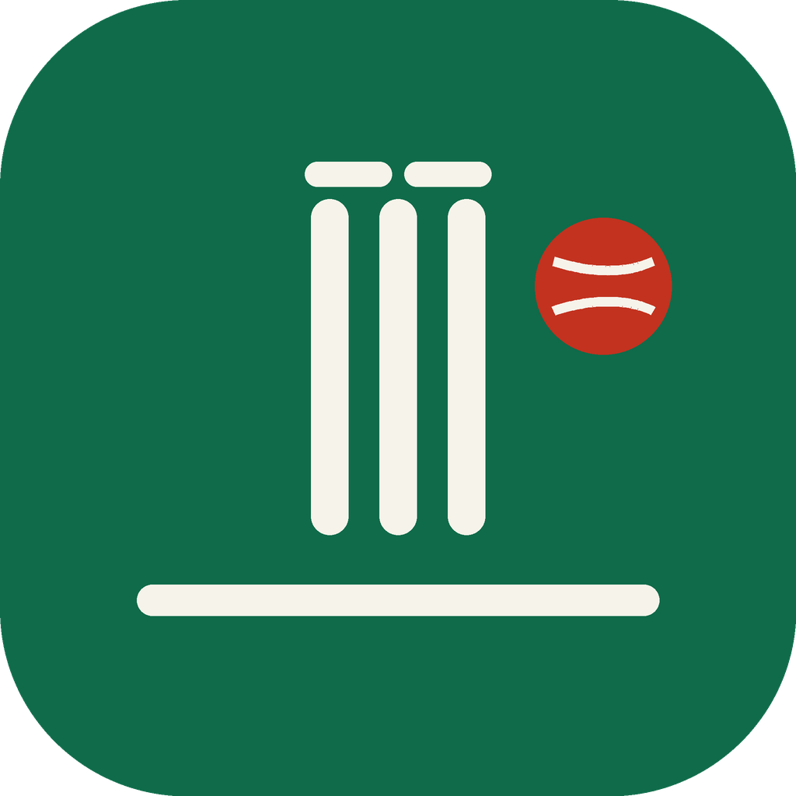

CreaseCareer batting records across three formats. Switch format, pick two players for a head-to-head, then filter the table and charts below.
Click a row to set Player A, click another to set Player B. Figures are approximate career totals — verify against ESPNcricinfo before quoting.
Bubble size = number of hundreds. Top-right is the sweet spot: consistent and fast. Shows only players that pass the filters.